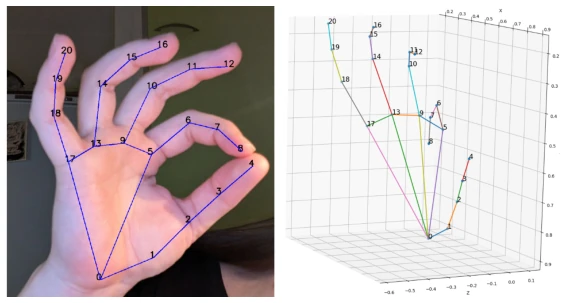
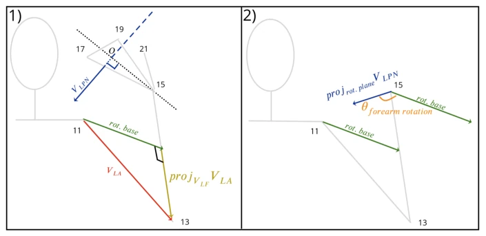
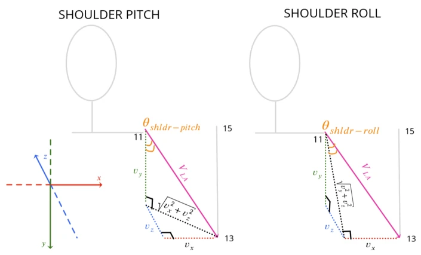
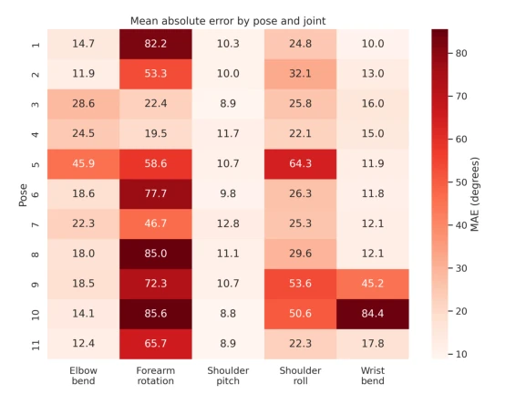
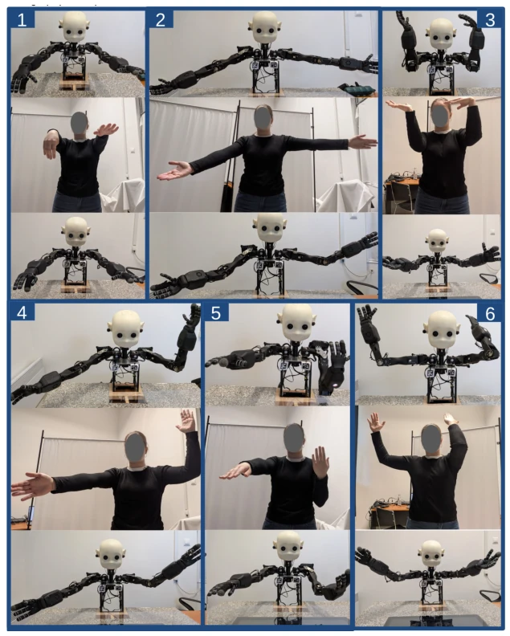
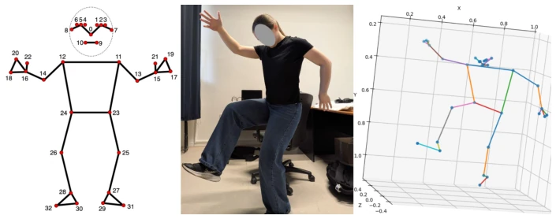

这篇论文给 Embodied AI 圈又添了一个“几何学奇迹”。作者试图用纯 RGB 摄像头和解析几何，让 NICO 机器人模仿人类手臂动作，听起来像是用算盘代替 GPU。亮点在于无需训练、计算飞快，确实适合资源受限场景。但毒舌一点看，这本质上是个“坐标变换脚本”，遇到复杂手势尤其是前臂旋转时，误差直接爆炸到 50 度以上，基本属于“形似神不似”。MediaPipe 的伪 3D 坐标在遮挡下依然坑爹，作者也没能解决这个根本问题。与其说是智能模仿，不如说是“视觉引导的机械臂运动学求解”。对于追求通用性的研究来说，这更像是一个特定场景下的工程 Demo，而非通用解决方案。
This paper adds another "geometric miracle" to the Embodied AI community. The authors attempt to use pure RGB cameras and analytical geometry to make the NICO robot mimic human arm movements, which sounds like using an abacus to replace a GPU. The highlight lies in being training-free and computationally fast, truly suitable for resource-constrained scenarios. But to be a bit critical, this is essentially a "coordinate transformation script"; when encountering complex gestures, especially forearm rotation, the error explodes directly to over 50 degrees, basically belonging to "superficial resemblance without the essence". MediaPipe's pseudo-3D coordinates remain problematic under occlusion, and the authors failed to solve this fundamental issue. Rather than intelligent imitation, it is more like "vision-guided robotic arm kinematic solving". For research pursuing generality, this is more like an engineering demo under specific scenarios, rather than a general solution.
Robot imitation capability is the cornerstone of achieving natural human-robot interaction (HRI). Existing methods are mainly divided into two categories: one is learning-based methods, such as [1][2][3], which have strong generalization but rely on big data and computing power, making real-time deployment difficult; the second is analytical geometry-based methods, such as [5][6], which have high efficiency but often rely on depth cameras or simplified gestures. Especially [6], although it uses analytical methods, it requires depth sensors, increasing costs. This paper aims to solve the full-arm imitation problem under pure RGB input, avoiding expensive hardware and training overhead. Existing work mostly focuses on simplified gestures or specific hardware, lacking robust handling of complex arm postures (such as forearm rotation). The authors hope to combine the real-time performance of MediaPipe and the interpretability of analytical geometry to achieve meaningful imitation on low-cost hardware, filling the gap in full-arm kinematics under RGB monocular input.
The overall Pipeline is divided into three steps: Perception, Reconstruction, Mapping. First, utilize MediaPipe to extract human and hand keypoints from monocular RGB frames to obtain pseudo-3D coordinates. The innovation lies in the keypoint fusion strategy: when hand keypoints are available, prioritize replacing hand points in the pose model to improve the accuracy of wrist and forearm information. Second, reconstruct joint angles through analytical geometry. The authors derived vector formulas to calculate wrist flexion, forearm rotation, elbow flexion, and shoulder pitch/roll/yaw angles. For example, forearm rotation is determined by calculating the angle between the palm normal vector and the forearm vector, while elbow flexion utilizes the dot product of upper and lower arm vectors. Targeting the NICO robot's unique kinematic structure (no elbow roll axis), the authors adjusted the formulas to adapt to its 6DoF arm. Finally, map the calculated angles linearly to the effective range of NICO servo motors, and handle angle boundary and direction issues. The entire process requires no neural networks, relying completely on geometric relationships.

Fig. 3. Visualization of hand landmarks extracted using MediaPipe.

Fig. 5. Example of forearm rotation calculations. Numeration from Fig. 4

Fig. 6. Left shoulder angles calculations. Numeration from Fig. 4

Fig. 7. Average absolute reconstruction error (MAE, degrees) for each evaluated pose and reconstructed joint. Values are averaged across all participants and viewing angles using the proposed method with MediaPipe hand landmarks whenever available.
Experiments were conducted on 6 volunteers of different heights, collecting 11 symmetric upper limb poses, covering different views (0°, 30°, 45°). The metric is joint angle Mean Absolute Error (MAE). Results show that the MAE for shoulder pitch, elbow flexion, and wrist flexion is about 10°-23°, performing passably. But forearm rotation error reaches up to 50.1°, which is the main bottleneck. Introducing hand keypoints reduced error by about 25% compared to using only pose points, but still not ideal. View impact is small, but self-occlusion and gesture complexity significantly affect accuracy. Calculation speed is extremely fast, average 0.0017 seconds/frame. Conclusions indicate the method is feasible under controlled conditions, but forearm rotation estimation still needs improvement, and head motion is not involved.

Fig. 8. Qualitative comparison of six test poses. Each cell shows one gesture: the robot pose obtained from manually defined reference landmarks, the corresponding human RGB input image, and the robot pose obtained after MediaPipe landmark extraction and RGB-based reconstruction.
其他图片Other Figures

Fig. 4. Example of pose landmark extraction. Left: MediaPipe landmark indexing scheme. Center: input RGB frame. Right: reconstructed 3D landmarks obtained from MediaPipe.